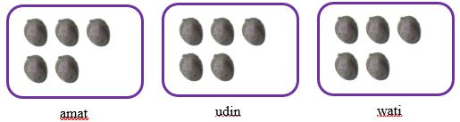

Siswa mampu memahami sifat-sifat Pembagian Bilangan Bulat
Pembagian Bilangan Bulat
dalam matematika, Pembagian dapat diartikan sebagai mengurangkan bilangan terhadap bilangan yang tetap hingga habis. Jika terdapat 15 buah Kasturi dibagikan kepada 3 anak, maka dapat digambarkan sebagai berikut:

maka setiap anak mendapatkan 5 buah Kasturi. Jadi, 15 : 3 = 5
Pembagian juga bisa disebut operasi kebalikan dari Perkalian. coba kita ambil contoh dari jawaban diatas.
15 : 3 = 5 ↔ 3 x 5 = 15 maka dapat kita simpulkan bahwa setiap a,b dan c Bilangan bulat maka berlaku :